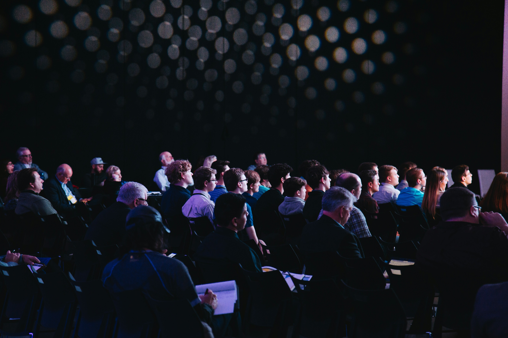
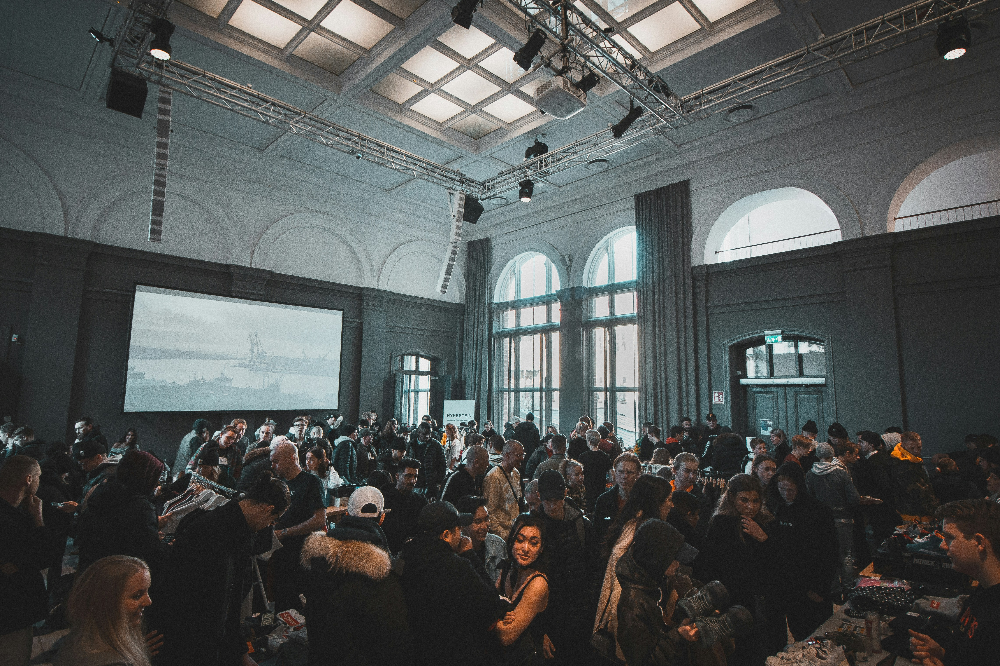
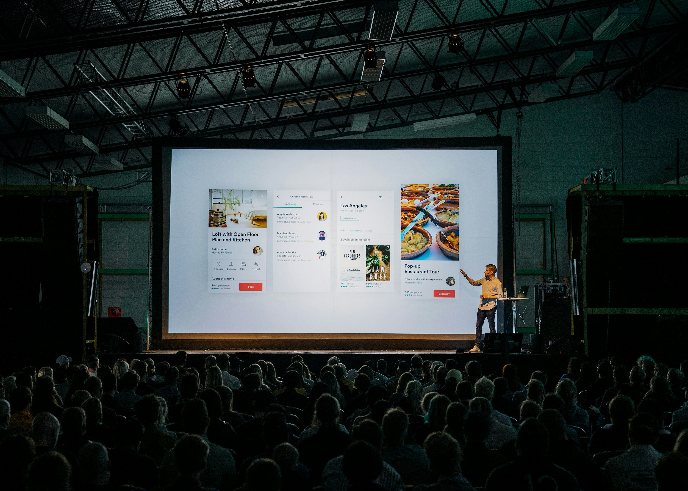
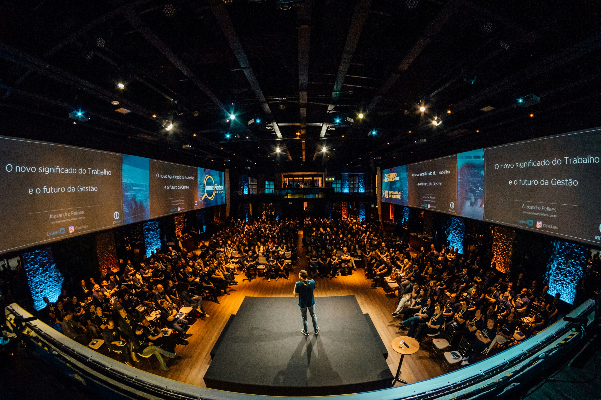
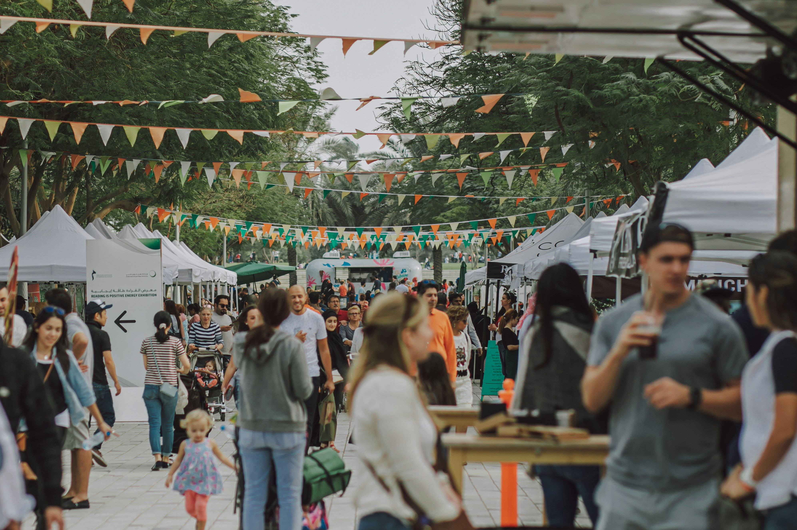

Eventos encontrados

Palestra Impacto Social
Encontro com especialistas e líderes de ONGs para debater como transformar comunidades por meio do voluntariado.
São Paulo - SP Palestra
Congresso do Terceiro Setor
Um dia inteiro de painéis e troca de experiências entre organizações, voluntários e apoiadores de projetos sociais.
São Paulo - SP Congresso
Show Beneficente Solidário
Apresentações musicais ao vivo com renda revertida para projetos sociais. Venha se divertir e fazer o bem.
São Paulo - SP Show
Workshop de Captação de Recursos
Aprenda estratégias práticas para apresentar projetos, conquistar parceiros e arrecadar fundos para sua causa.
São Paulo - SP Workshop
Fórum de Voluntariado
Debates e depoimentos de voluntários sobre boas práticas, desafios e o futuro da ação social no país.
São Paulo - SP Fórum
Feira Comunitária Solidária
Feira ao ar livre com barracas de artesanato, alimentos e ações das organizações parceiras, aberta a toda a família.
São Paulo - SP FeiraEncontro de Networking Social
Conecte-se com voluntários, empreendedores sociais e ONGs para criar parcerias e dar vida a novos projetos.
São Paulo - SP Networking